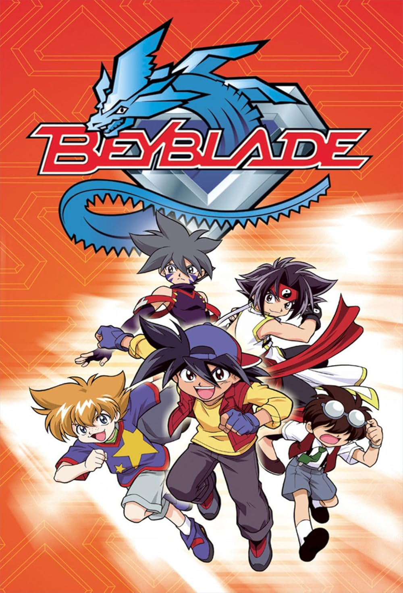

O Futuro dos Vingadores no MCU
Após os eventos de Ultimato, o universo Marvel está em reconstrução. Novos heróis surgem enquanto antigas lendas deixam seu legado. A grande pergunta é: quem liderará a próxima geração?

Naruto: O Legado de um Ninja
Naruto marcou uma geração com sua história de superação. De órfão rejeitado ao Hokage da Vila da Folha, sua jornada continua inspirando fãs no mundo inteiro.
Jujutsu Kaisen e a Nova Era dos Animes Sombrio
Com batalhas intensas e animação impressionante, Jujutsu Kaisen se tornou um dos maiores fenômenos da nova geração. Yuji Itadori e Sukuna trouxeram uma energia diferente para o mundo dos animes de ação.

Beyblade: A Emoção das Batalhas
Desde a era clássica até Beyblade Burst, a franquia continua conquistando fãs com batalhas eletrizantes. Cada pião carrega personalidade e estratégia, transformando cada duelo em um espetáculo.